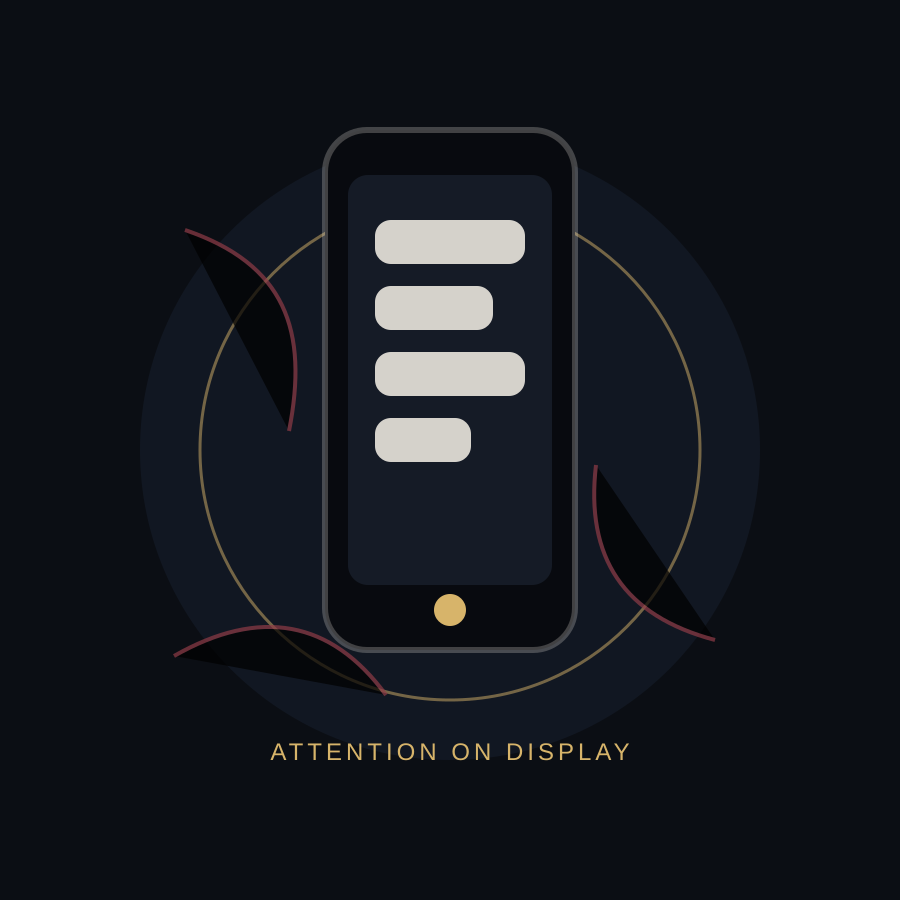

This museum is not about blaming the phone.
It is about understanding the system around it: notifications, feeds, habits, design choices, social pressure, boredom, and the small moments when checking becomes automatic.
The Attention Trap
This exhibit begins with a familiar object: the phone in your pocket. It is a map, camera, classroom, clock, social room, and escape hatch. But somewhere along the way, the tool became an environment — one that asks for attention before we even decide to give it.

It is about understanding the system around it: notifications, feeds, habits, design choices, social pressure, boredom, and the small moments when checking becomes automatic.
As you move through the exhibits, pay attention to the moments that feel familiar. The museum works through recognition: the buzz, the swipe, the quick check, the lost hour.
The route moves from invention to habit, then from impact to personal reflection.
How the phone moved from a communication device to an always-present personal object.
02How platforms compete for time using feeds, alerts, streaks, and endless surfaces.
03Why checking becomes automatic, especially during boredom, stress, waiting, or silence.
04How phone dependency can shape sleep, focus, relationships, school, and mental load.
05A final room for reflection, small commitments, and rebuilding control.
A private surface that became a public demand: messages, streaks, headlines, reminders, badges, alerts, and invitations to return.